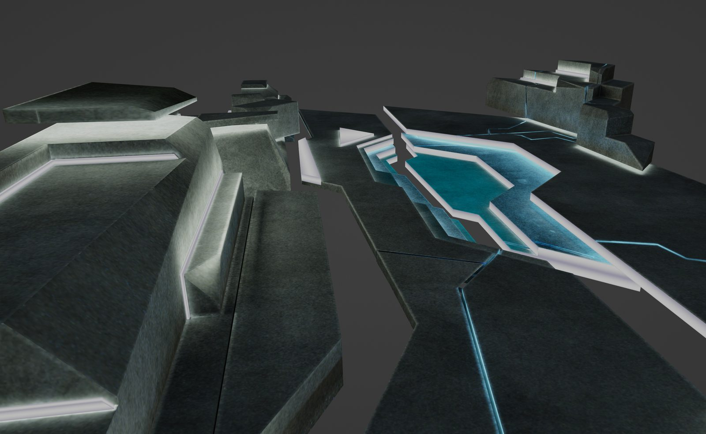
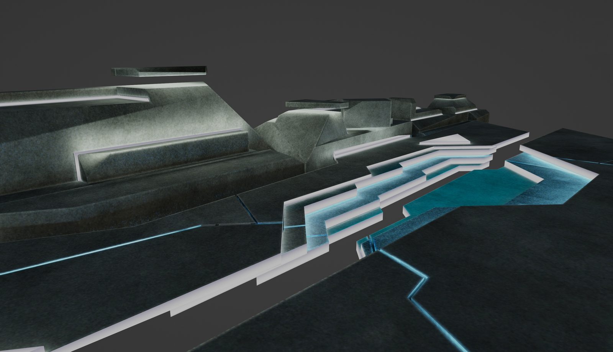
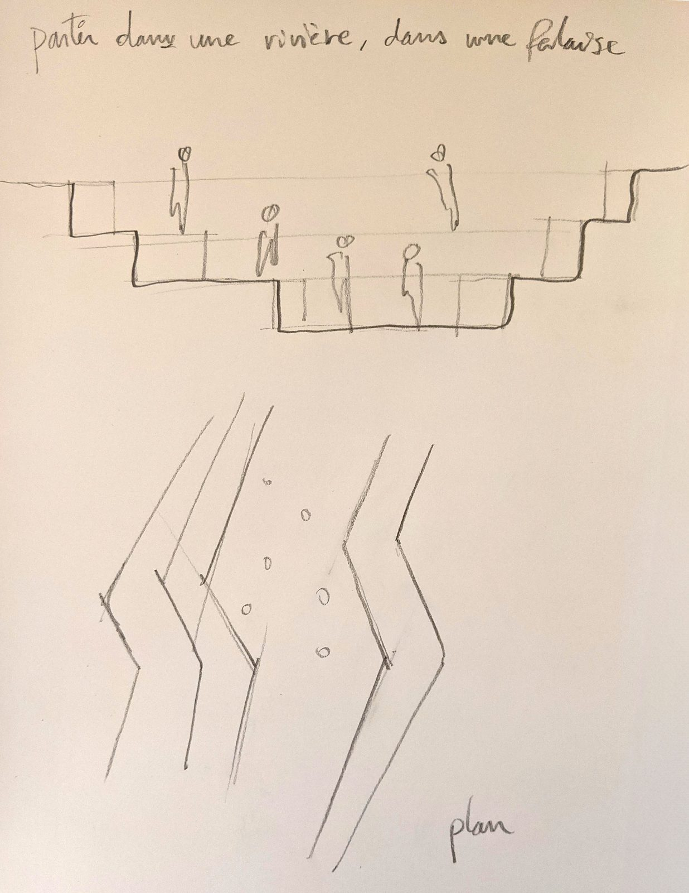
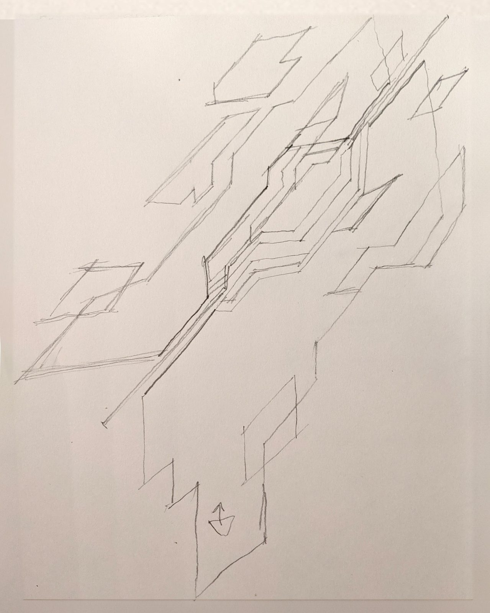
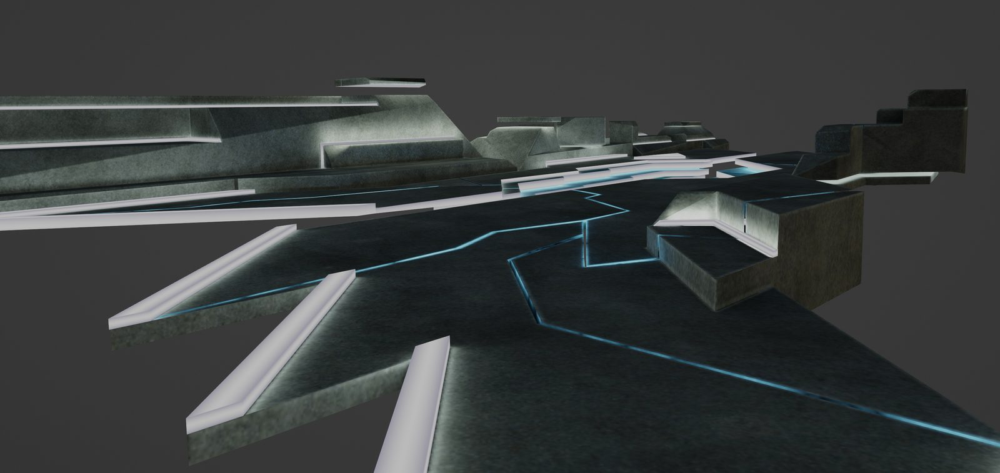

A rift in space as meeting space. Designed to host metaverse conversations during MUTEK, this angular fissure suspends participants between two geological planes.
The SAT & MUTEK Conference Room was conceived as a virtual meeting space for the Société des arts technologiques’ Satellite platform during the MUTEK festival. Rather than recreating the conventions of a physical conference room (chairs, tables, screens), the space reimagines the meeting as a geological event: a rift torn through a dark plane, its edges glowing with cyan light, the participants standing within the fissure itself.
The title, Partir dans une rivière, dans une falaise (Leaving in a river, in a cliff), captures the spatial concept: the rift functions simultaneously as a river canyon and a cliff face, a space carved by forces rather than constructed by hands. Participants descend into the fissure, positioned at different elevations and vantage points, a spatial hierarchy that subverts the flat democracy of the video call grid.
The conference room’s design treats architecture as geology. The angular forms suggest tectonic fracture rather than construction. Plates of dark stone-like material separated by luminous fissures, creating an environment that is simultaneously intimate and vast.
Branching paths extend from the central rift, offering different spatial conditions for different modes of conversation: narrow channels for focused exchange, wider plateaus for group discussion. The glowing edges serve as both wayfinding and atmosphere, casting subtle cyan light across the dark surfaces.

A rift in space as meeting space. The participants descend into the fissure, positioned at different elevations and vantage points, subverting the flat democracy of the video call.


The design process moved from pencil sketches, quick section studies showing human figures occupying the rift at various levels, to 3D modelling within the constraints of the Satellite platform. The sketches reveal the core spatial idea: a narrow chasm that forces participants into proximity while the landscape extends dramatically above and beyond them.
The project demonstrates a recurring theme in Samuel’s virtual architectural work: that the most powerful virtual spaces are not simulations of physical rooms but translations of natural phenomena: rifts, caves, canyons, cliffs, translated into functional environments, compressed into the functional brief of a conference room.
